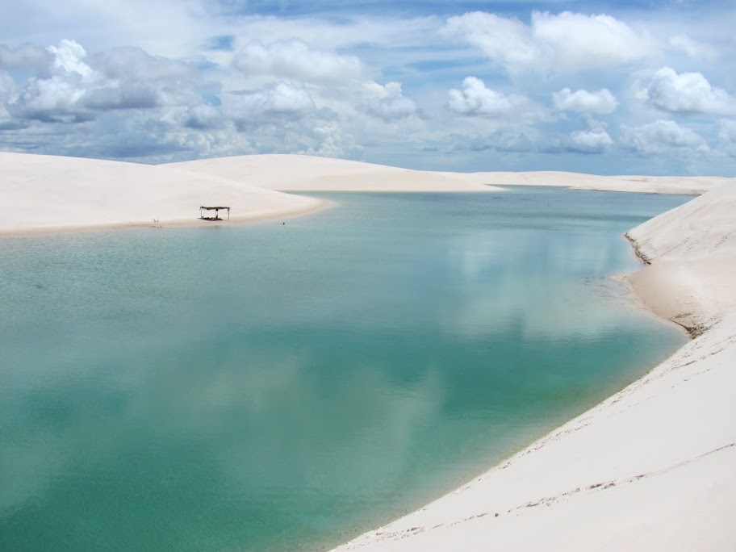

Mais procurado Saída 8h · ~6hCircuito Emendadas
O mais completo. As Lagoas Emendadas formam um espelho d'água que conecta duas lagoas — a vista de cima é a foto que todo mundo quer.
- Parada em 3 lagoas (Emendadas, Preta e Manga)
- Acesso exclusivo por trilha 4×4
- Pôr do sol panorâmico nas dunas